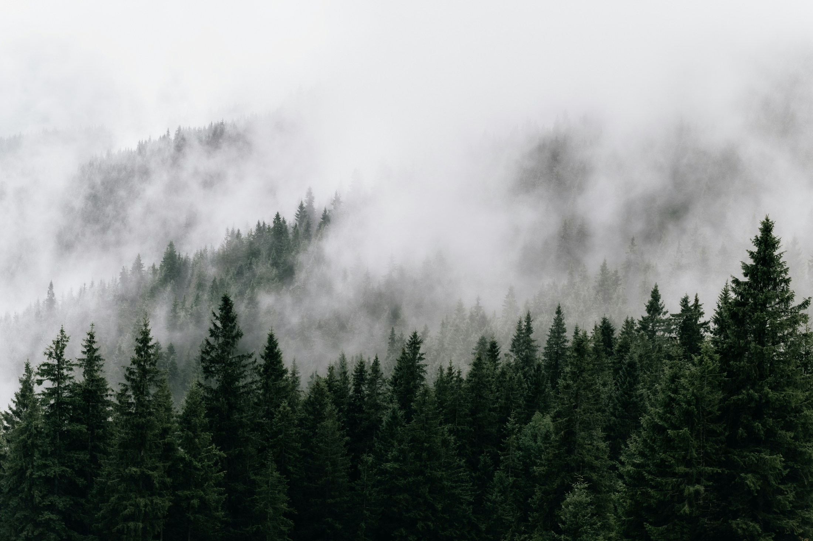
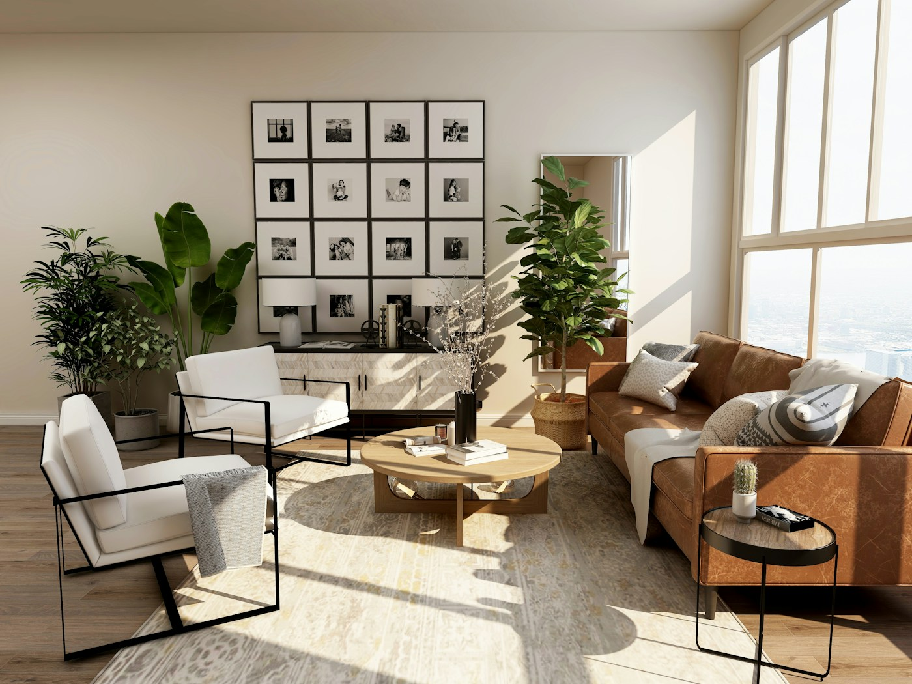

Панорамний люкс
від €240 / ніч
Світлий простір для неспішних ранків і вечорів із гірським краєвидом.
48 м² 2 гості

ВАШЕ МІСЦЕ СЕРЕД ГІР
Приватний відпочинок серед гір, де кожна
деталь створена для вашого спокою.
01 / ФІЛОСОФІЯ МІСЦЯ
Ранок із видом на гори. Аромат свіжої кави. Тиша, яку не хочеться порушувати.
Maison Aurelle — камерний прихисток серед карпатських лісів, де місцевий характер поєднується із сучасним комфортом. Продуманий сервіс і приватність залишають простір для найважливішого — бути тут і зараз.
Відчути атмосферу
02 / НОМЕРИ ТА РЕЗИДЕНЦІЇ
М’які фактури, природне світло й жодної зайвої деталі. Оберіть простір, який відгукується саме вам.
від €240 / ніч
Світлий простір для неспішних ранків і вечорів із гірським краєвидом.
від €180 / ніч
Камерний затишок, спокійні кольори та відчуття усамітнення серед дерев.
від €320 / ніч
Особистий простір для відпочинку вдвох або теплих моментів із близькими.
Номери, їхні характеристики та ціни вигадані для портфолійного проєкту.
03 / МИСТЕЦТВО ВІДПОЧИНКУ
Залиште у своєму дні місце для того, що наповнює. Решта може зачекати.
ВІДНОВЛЕННЯ
Тепла вода, неквапні ритуали й відчуття легкості.
СМАК МІСЦЯ
Знайомі карпатські смаки в делікатному сучасному прочитанні.
НАЗУСТРІЧ ПРИРОДІ
Прогулянки без поспіху та краєвиди, що залишаються з вами.
ОСОБЛИВІ МОМЕНТИ
Тиха розмова, світло свічок і привід побути разом.
Найкраща розкіш — це час,
який належить тільки вам.
04 / ЗА СПІЛЬНИМ СТОЛОМ
Лісові гриби, запашні трави та ніжний овечий сир. Наша уявна кухня починається з поваги до місця й перетворює прості інгредієнти на особливі спогади.
Від першої ранкової кави до останнього келиха за вечерею — дозвольте собі смакувати кожну мить.
05 / УЯВНІ ІСТОРІЇ ГОСТЕЙ
Вигадані відгуки для ілюстрації концепції. Вони не є відгуками реальних гостей.
Тут не хочеться дивитися на годинник. Лише на гори, що щоранку здаються зовсім іншими.
Найцінніше — відчуття, що про все вже подбали. А тобі залишається просто бути.
06 / КАДРИ, ЩО ЗБЕРІГАЮТЬ ВІДЧУТТЯ
Трохи натхнення для вашої наступної паузи.
Атмосферні фотографії ілюструють концепцію та не зображують реальний готель Maison Aurelle.
ДОЗВОЛЬТЕ СОБІ ПАУЗУ
Оберіть дати для своєї маленької втечі до гір.
Демонстраційна форма. Бронювання та оплата не здійснюються.